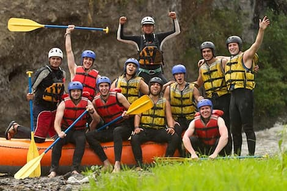
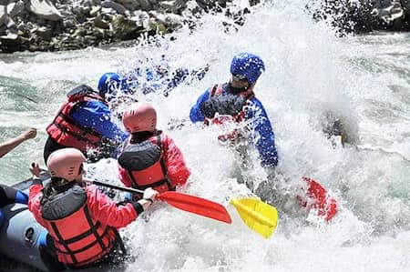

Our Mission
To deliver unforgettable whitewater adventures with safety, passion, and respect for nature.
To deliver unforgettable whitewater adventures with safety, passion, and respect for nature.
Our journey began on the sacred and amazing rivers of southern Peru, where the Andes meet the Amazon. A group of local adventurers—born and raised near the Colca and Apurímac rivers—came together with one goal and dream: to share the raw beauty and thrill of Peruvian whitewater with the world.
What started with a single raft and a deep respect for Pachamama has grown into a trusted rafting company known for safety, passion, and unforgettable river experiences. Today, we guide travelers through ancient canyons and wild rapids, blending adrenaline with culture, and adventure with heart.